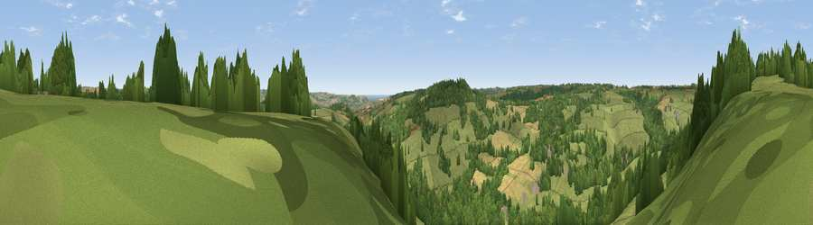

Viewpoint near Wilmington
#25206 in England · top 58% of its area beats it · near WilmingtonWhere it is
The exact computed spot (ST 22325 00425). Click the marker for map links.
The view, rendered

A 360° render of this exact spot computed from the terrain model, tree cover and land cover — summer colours, afternoon light, calibrated against photographs of famous viewpoints. Real trees, hedges and buildings will differ in detail.
The panorama
Grey silhouette: terrain skyline in each direction (720 bearings, Earth curvature and refraction included). Dashed green: skyline with trees (+15 m) and buildings (+8 m) as obstacles. Blue strip: how far the ground is visible on each bearing.
Where the view opens
Wedge length = distance to the farthest visible ground on that bearing (vegetation-aware). Rings at 10, 25 and 50 km.
What fills the view
62% grassland · 30% woodland · 7% cropland ·
Angular shares of the visible panorama (visual magnitude), not map area. Landscape diversity 0.39 (0–1 Shannon).
Key numbers
More beautiful places nearby
The staircase of upgrades: each row has a higher view potential than everything closer. Driving times are estimates from straight-line distance, calibrated against real road routing — check an actual route before setting out.
| Place | Direction | Drive | Score |
|---|---|---|---|
| Viewpoint near Wilmington | SSE · 0 km | ~1 min | 55.4 |
| Viewpoint near Wilmington | N · 1 km | ~3 min | 59.4 |
| Widworthy Hill | SSW · 2 km | ~5 min | 64.6 |
| Viewpoint near Gittisham | WSW · 8 km | ~16 min | 64.8 |
| Viewpoint near Membury | NE · 8 km | ~16 min | 65.0 |
| Viewpoint near Seaton | S · 9 km | ~18 min | 67.3 |
| Viewpoint near Axmouth | SSE · 10 km | ~19 min | 73.4 |
| Hembury | WNW · 11 km | ~21 min | 75.9 |
50.79816, -3.10353 · source: screening · position refined by local search. Computed location — check access rights before visiting.